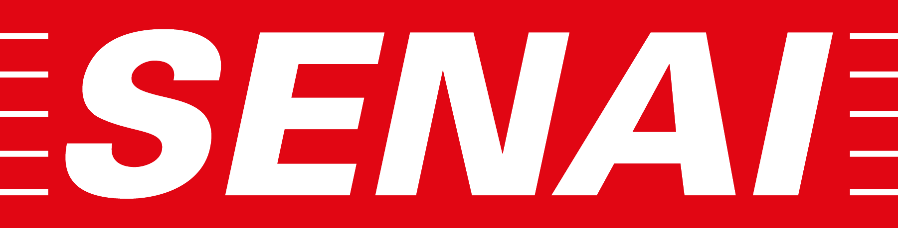

Serviços, contratos e créditos pedagógicos com a experiência de um banco digital moderno.

Escolha como você participa do projeto.
Veja o essencial em quatro passos rápidos.
Selecione um perfil para começar.
Perfil de demonstraçãoCriado pelo backend de teste